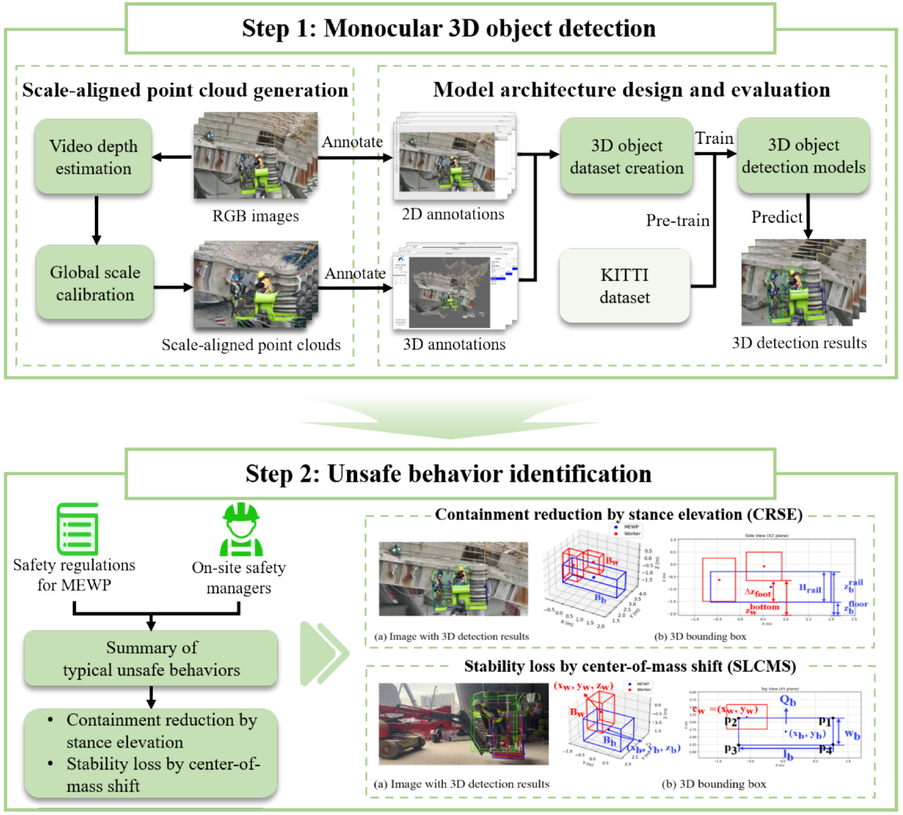
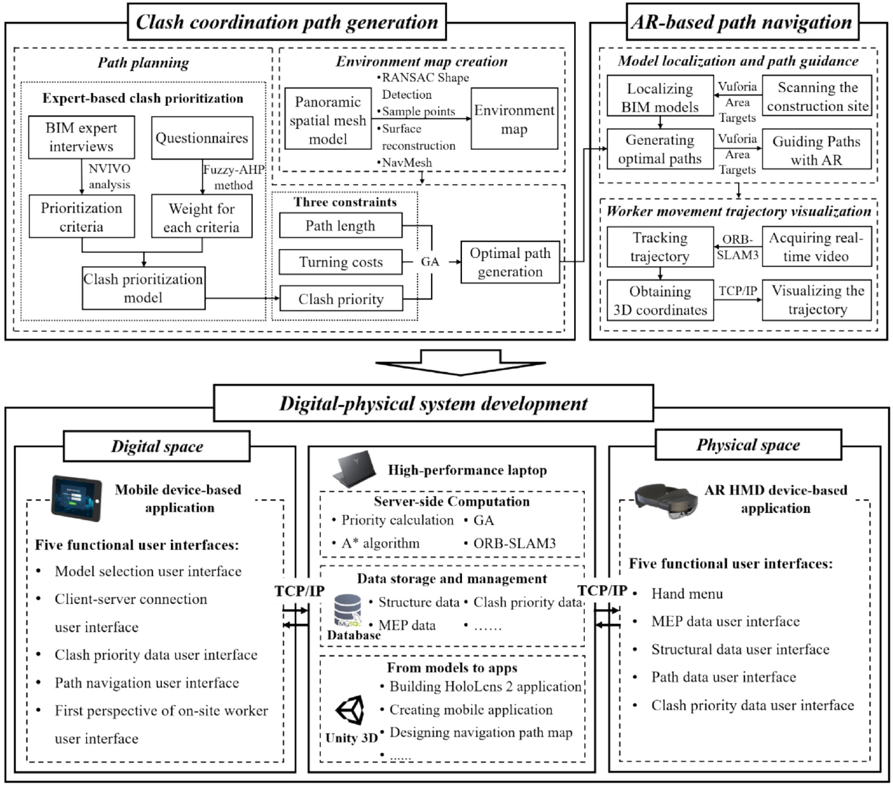
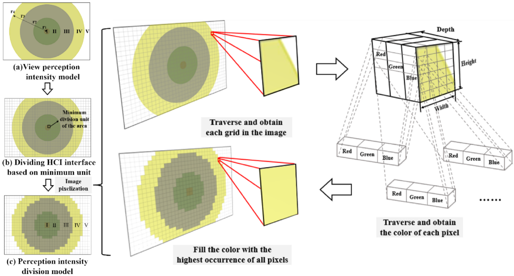
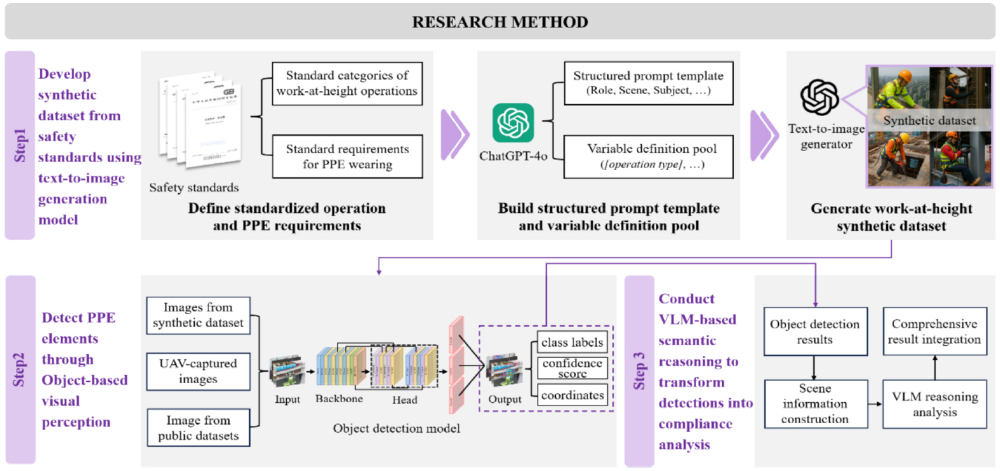
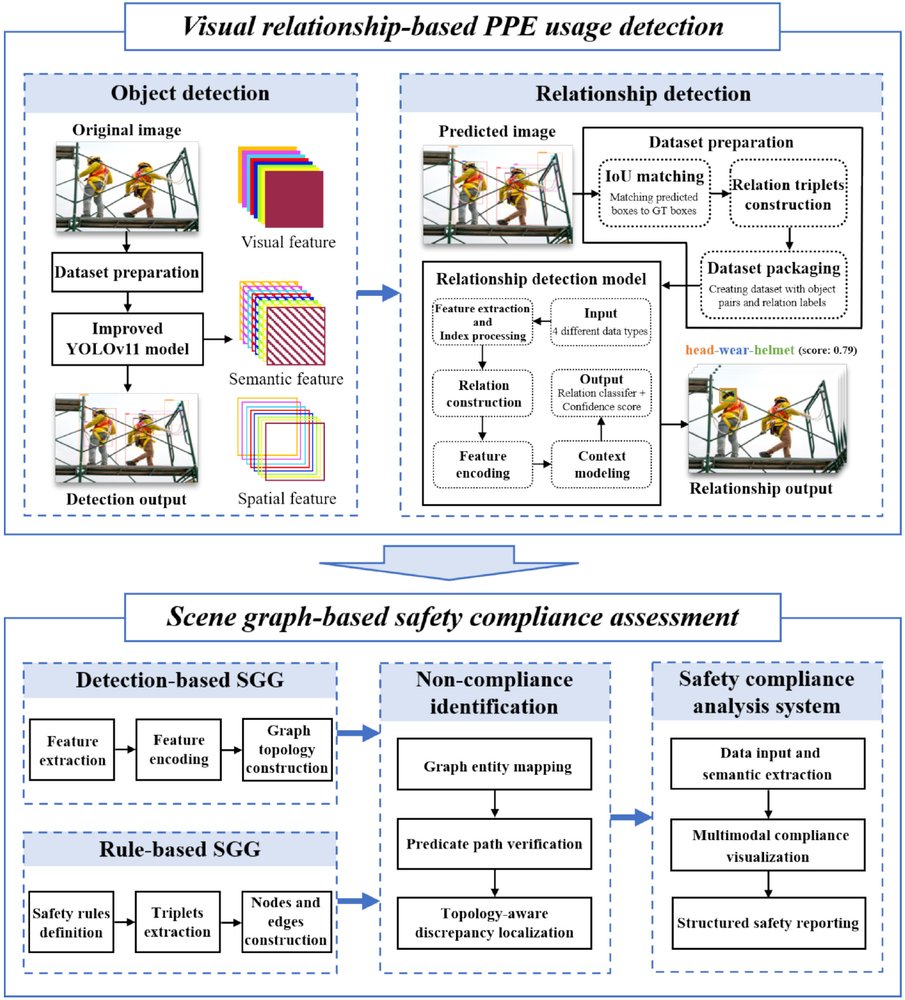
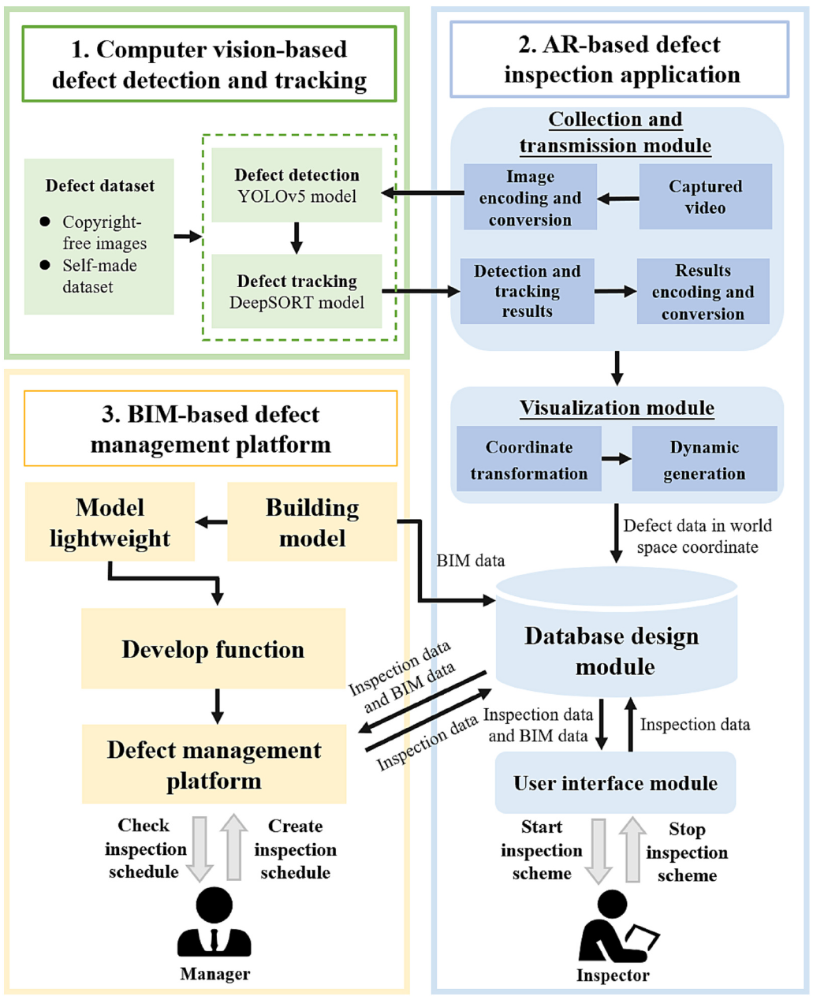
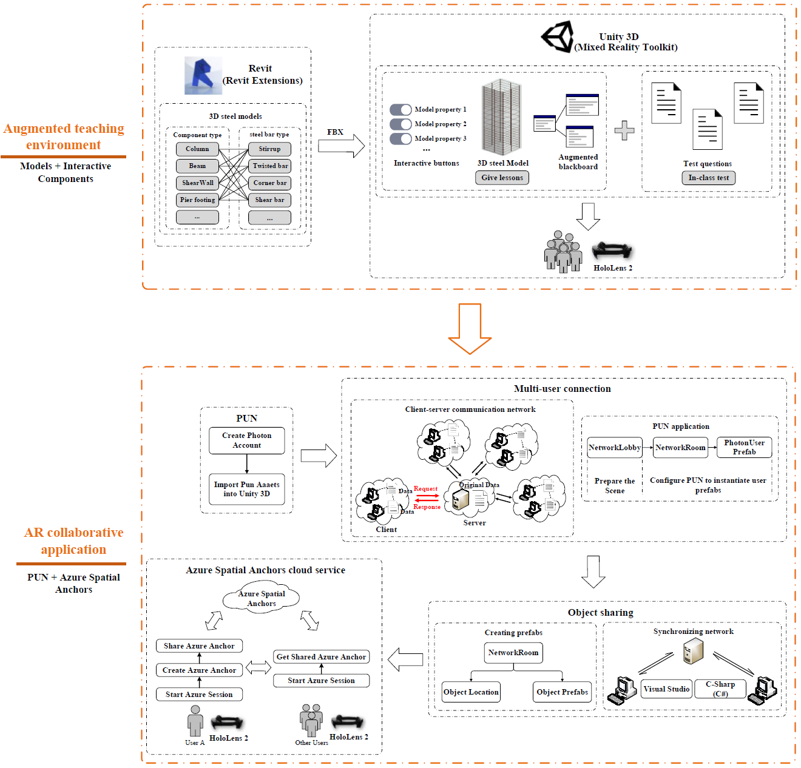
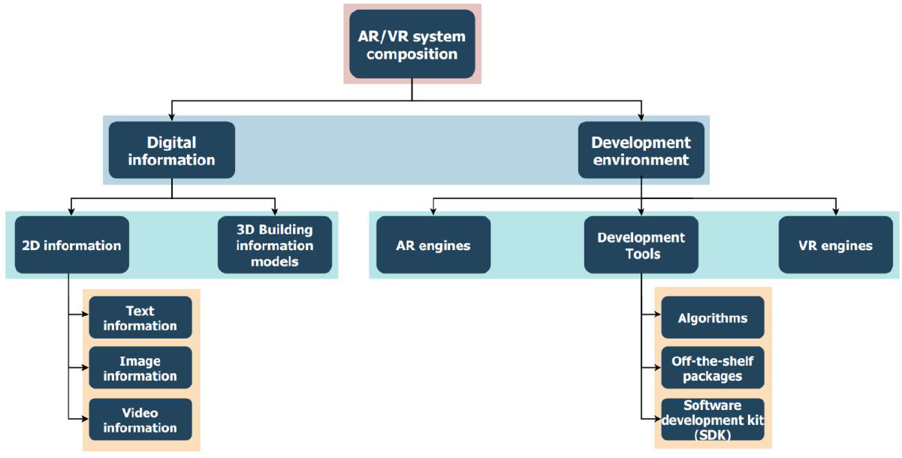
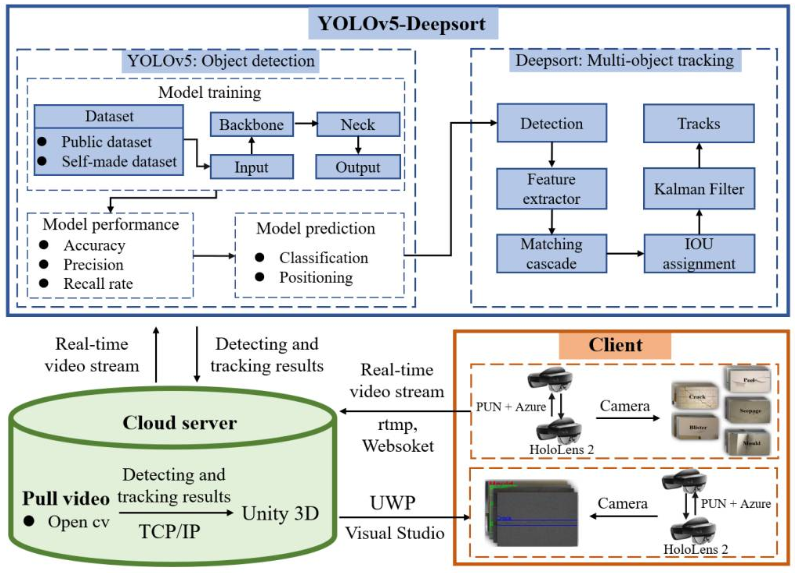

Wenyu Xu
I am a researcher in intelligent construction, computer vision, augmented reality, BIM, UAV inspection, and vision-language reasoning. My research focuses on vision-language reasoning, UAV-based inspection, AR-assisted defect inspection, digital-physical integration, and multimodal perception for work-at-height scenarios.
About Me
I am currently affiliated with the Department of Building and Real Estate at The Hong Kong Polytechnic University. My academic background is in civil engineering, construction management, computer vision, and intelligent construction technologies. I received my M.S. degree in Civil Engineering from Shenzhen University and my B.S. degree in Construction Costs from Sichuan Normal University.
Academic Profile
My work lies at the intersection of computer vision, AR/BIM, UAV inspection, vision-language reasoning, and multimodal artificial intelligence for the AEC industry.
Research Goal
I aim to develop intelligent perception, reasoning, and decision-support methods for safer, more reliable, and more automated construction environments.
Education
Shenzhen University, China
Supervisor: Prof. Yi Tan
Average Score: 89.40 · GPA: 3.67/4.0 · Integrated Ranking: 4/134, Top 3%
Sichuan Normal University, China
Average Score: 87.44 · GPA: 3.69/4.0 · Integrated Ranking: 2/88, Top 3%
Current Research Focus
AI for Intelligent Construction
Vision-based inspection, visual reasoning, digital-physical integration, and intelligent decision support for construction environments.
Work-at-Height Risk Perception
Worker-centered visual reasoning and multimodal risk representation for fall-from-height scenarios.
UAV-based Inspection
UAV-enabled construction inspection, unsafe equipment operation detection, and visual data-driven site monitoring.
AR/BIM-enabled Digital-Physical Integration
Integration of BIM, augmented reality, computer vision, and path planning for inspection, coordination, and data management.
Selected Publications









Selected Projects
Vision-language Reasoning for Work-at-Height Inspection
Developed visual reasoning methods for work-at-height inspection scenarios, including object-guided reasoning, visual relationships, and scene graph reasoning.
UAV-based MEWP Safety Inspection
Investigated automated UAV-based inspection of unsafe mobile elevated work platform operations using monocular 3D detection.
AR/BIM-assisted Building Defect Inspection
Explored computer vision, augmented reality, and BIM integration for building defect inspection and data management.
Digital-Physical Clash Coordination
Studied path planning and AR navigation for MEP-structural clash coordination in digital-physical construction environments.
Selected Awards
- Excellent Graduate, Shenzhen University, 2024
- Liyan Excellent Learning Scholarship, Shenzhen University, 2023–2024
- National Scholarship, Ministry of Education, 2023
- The 15th Innovation Competition in Construction Engineering and Management, 1st Prize, 2023
- The 8th China Graduate Smart-city Technology and Creative Design Competition, 3rd Prize, 2023
- The 14th Innovation Competition in Construction Engineering and Management, 2nd Prize, 2022
- The 7th National BIM Graduation Design Innovation Competition for Universities, 1st Prize, 2021
Patents and Software Copyrights
- A human-machine interactive intelligent detection system for high-rise building exterior wall diseases based on BIM, AR and UAV.
- A digital twin driven human-computer interactive intelligent inspection system for building apparent diseases.
- A visual building exterior wall inspection simulation and management platform based on Three.js and BIM V1.0.
- A real-time detection and tracking software for building defects based on AR and computer vision.